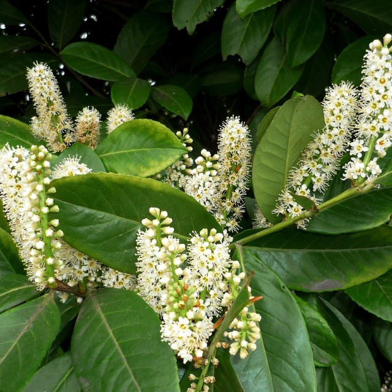
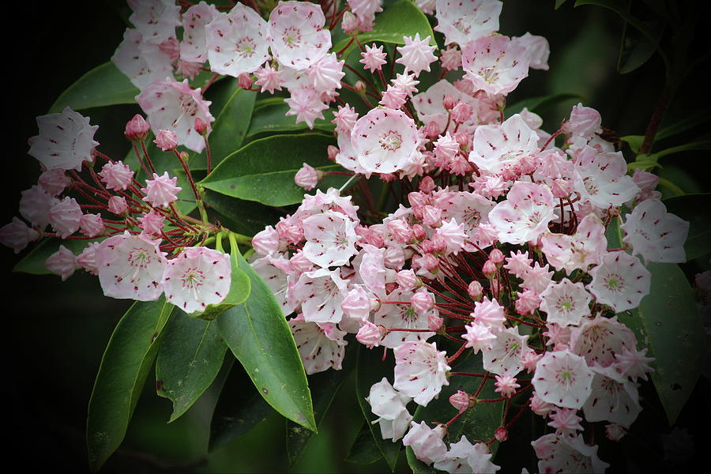
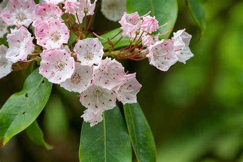
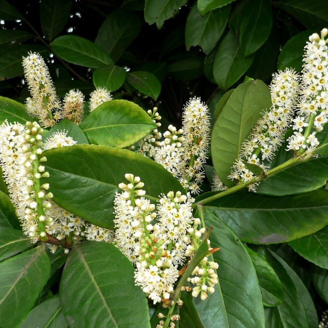
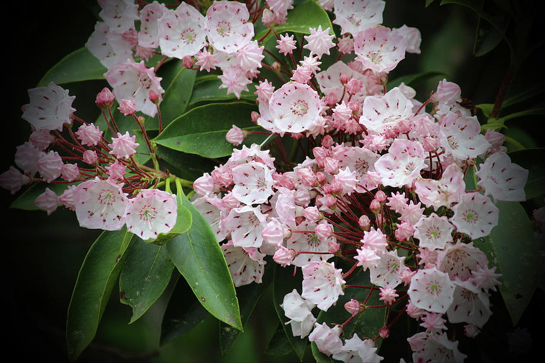
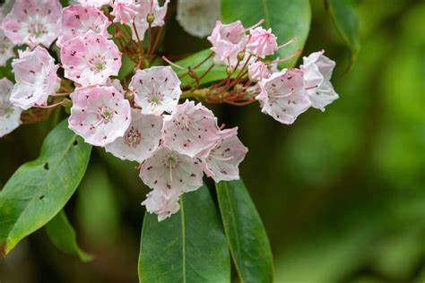
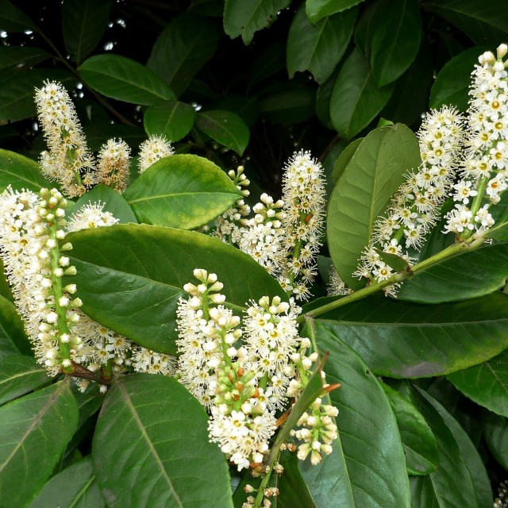
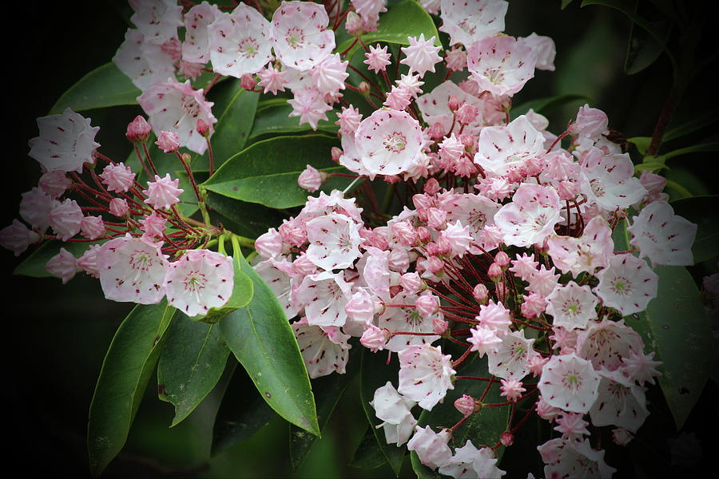
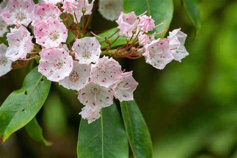

  
  
* Contiene hierro
* Alivia las digestiones pesadas
* Sirve para tratar afecciones del aparato respiratorio
* Se emplea para elaborar productos cosméticos Informacion del Laurel
Plantas Medicinales
  
* Contiene hierro
* Alivia las digestiones pesadas
* Sirve para tratar afecciones del aparato respiratorio
* Se emplea para elaborar productos cosméticos Informacion del Laurel